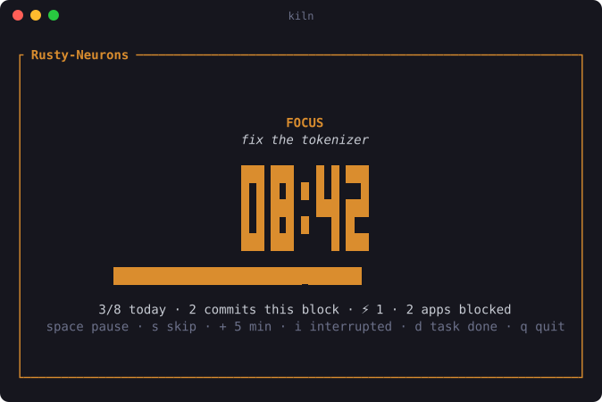
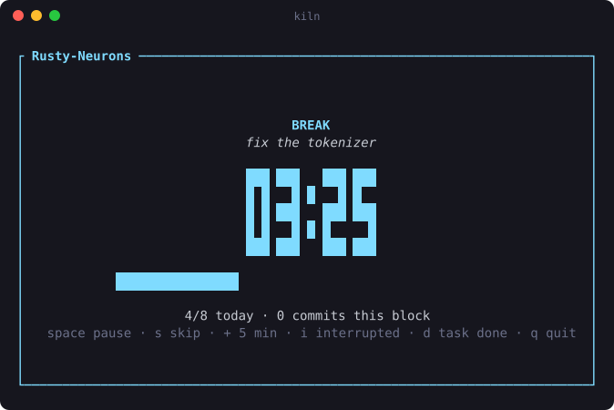
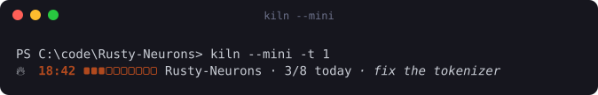

Kiln
Timer de foco para o terminal que liga suas sessões de foco aos seus commits: pomodoro, estatísticas por projeto, heatmap e tarefas, tudo local.A focus timer for the terminal that links your focus sessions to your git commits: pomodoro, per-project stats, a heatmap and tasks, all local.
0

O que fazWhat it does
- Pomodoro: 25 min de foco, 5 de pausa e uma pausa longa a cada 4 blocos. O relógio esquenta de brasa a amarelo durante o foco.
- Pomodoro: 25 min focus, 5 min break and a long break every 4 blocks. The clock heats up from ember to yellow during focus.
- Sabe o projeto: dentro de um repositório git, a sessão leva o nome dele e conta seus commits feitos durante o foco.
- Knows your project: inside a git repo, the session is tagged with it and counts your commits made during focus.
- Estatísticas:
kiln stats,log,heatmapde 20 semanas, horários de pico e relatório em Markdown. - Stats:
kiln stats,log, a 20-weekheatmap, peak hours and a Markdown report. - Tarefas e metas por projeto, meta diária com sequência de dias e meta semanal.
- Tasks and goals per project, a daily goal with a streak and a weekly goal.
- Hook de git que marca os commits feitos no foco com
Focus-Session: 3/8. - A git hook that tags commits made during focus with
Focus-Session: 3/8. - Modo mini de uma linha e
kiln statuspara o prompt ou a barra de status. - One-line mini mode and
kiln statusfor your prompt or status bar. - Bloqueia distrações: pede para fechar os apps da lista durante o foco, sem perder nada não salvo.
- Blocks distractions: asks the listed apps to close during focus, without losing unsaved work.
- Só local: as sessões são um arquivo JSON Lines.
kiln syncsincroniza entre máquinas por um repositório git seu. - Local only: sessions are a JSON Lines file.
kiln syncshares them between machines through a git repo you own.
Como funcionaHow it works
Um único binário em Rust que desenha a interface no terminal. A cada 30 s ele olha o git log do projeto, filtrando pelo seu e-mail do git, para contar os commits do bloco. Só blocos completos são salvos; um bloco pulado ou interrompido não conta.A single Rust binary that draws its UI in the terminal. Every 30 s it checks the project's git log, filtered by your git email, to count the block's commits. Only completed blocks are saved; a skipped or interrupted block does not count.
Como rodarRun it
# precisa do Rust (cargo) cargo install --path . kiln # 25/5 no projeto atual kiln stats # últimos 7 dias
ImagensImages


kiln --mini: uma linhakiln --mini: one line